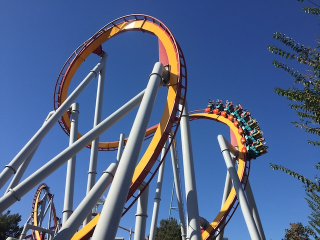
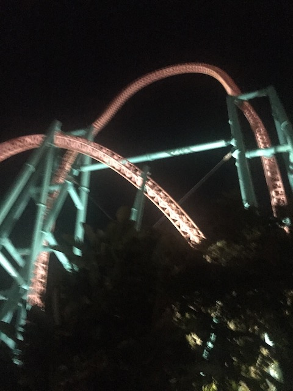
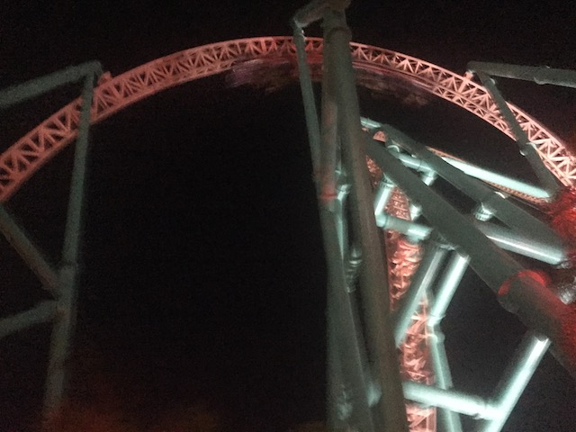

| |
Fall 2019 Photos
Dark Harbor & Fright Fest Knotts Scary Farm
All right. We've done Queen Mary's Dark Harbor & we've done Fright Fest. But Knotts Scary Farm is the best Halloween Event in SoCal (Still have yet to do Halloween Horror Nights. But...too expensive).

Well, it's daytime. Time for us to ride some roller coasters.
Love that Timber Mtn Log Ride still has all of its Halloween theming out during the day.
 All right. So at the end of the year, Knotts announced that this was the last year for Voyage to the Iron Reef, as their new 2020 ride would be a reboot of their old Beary Tales ride, except now redone as a shooting dark ride in the place of Voyage to the Iron Reef. While it's a bummer that Voyage to the Iron Reef is going since I really liked it (definately more than other enthusiasts). Still weird knowing that I did an update on its opening day, and it's already gone. But with that said, I'm really excited about Beary Tales coming to Knotts. Now I'm too young to have done the original ride since...it closed in 1986. 6 years before I was born. So I don't have the same sort of nostalgia for it that older enthusiasts do. But it still looks like a lot of fun and something that will be really good.
All right. So at the end of the year, Knotts announced that this was the last year for Voyage to the Iron Reef, as their new 2020 ride would be a reboot of their old Beary Tales ride, except now redone as a shooting dark ride in the place of Voyage to the Iron Reef. While it's a bummer that Voyage to the Iron Reef is going since I really liked it (definately more than other enthusiasts). Still weird knowing that I did an update on its opening day, and it's already gone. But with that said, I'm really excited about Beary Tales coming to Knotts. Now I'm too young to have done the original ride since...it closed in 1986. 6 years before I was born. So I don't have the same sort of nostalgia for it that older enthusiasts do. But it still looks like a lot of fun and something that will be really good.
All right. We came back from dinner. Scary Farm Time! >=)
Yeah. The rides earlier were fun. But now the real fun begins.
Where are we again?
Hmm. Something there's gonna be a lot of ghosts out in Ghost Town tonight.
Oh no! There's a monster lurking in the waterfall!
All right. Our first maze is gonna be the ONE maze we didn't do back in 2017 and just barely missed. Special Ops: Infected.
Though seriously. The Mystery Lodge building is a really cool place to put a Haunt Maze.
So Special Ops: Infected is a different maze. This is sort of a shooting dark ride, only in maze form. And....it's a ton of fun. Honestly, I'd probably rank this as my favorite haunt maze ever (So far at least).
Yes. Get vaccinated. Wouldn't want a global pandemic now. Would you?
Sadly, this is the last year for Special Ops. That makes me sad since this is my favorite haunt maze. =(
 Something tells me that this is the last time I'm ever gonna be in this building.
Something tells me that this is the last time I'm ever gonna be in this building.
 OK. Let's go from something on it's last year to something new. This is Origins.
OK. Let's go from something on it's last year to something new. This is Origins.
So....Origins is another maze based off a person who was murdered, and now she haunts Ghost Town. Except...this one is done REALLY well.
This maze is essentially a love letter to Ghost Town, and....it's really good. Definetly up there as far as mazes go.
Two big thumbs up from Incrediblecoasters.
This is also the last year for Shadowlands as well. Not a huge bummer as I'm not a huge fan of this maze. It's time for this one to go.

But hey. At least you got great views of Xcelerator going through the maze.

Still the best ride at Knotts.
The boss has not been entirely truthful with us
Show time. One of the new show's they've got this year is Puppet Up. It may have nothing to do with Halloween, but I don't care! This show is f*cking awesome!
So Puppet Up is a comedy improv puppet show. And when you realize that this show was created by Brian Henson, son of Jim Henson, you realize why this show is so good.
Damn it! Now I just want to watch The Muppets now. Or Glove and Boots works too (Great Youtube Puppet Show that I recommend).
I know a certain someone who got into puppetry thanks to this show. ;)
"Why Mrs. Rabbit Puppet! You're trying to seduce me!"
It's a shame that this show is only for Knotts Scary Farm. Cause if it was a yearround thing, then it would TOTALLY land a spot on our Top 10 Park Shows List. Well, it may be gone from Knotts Scary Farm. But hopefully it comes back next year. And if not, well....you can see the show on your own. It's really good and I would gladly pay to see it again. TOTALLY worth the Scary Farm ticket price alone.
And of course, the show ended with naked puppets, which turns out to be peoples hands. I know this is a joke, but this is porn for someone (Rule 34).
 And speaking of Knotts Scary Farm shows, time for their classic. The Hanging.
And speaking of Knotts Scary Farm shows, time for their classic. The Hanging.
Hang like an Egyptian.
So yeah. The Hanging is once again, a big show full of pop culture references. Normally, I don't like that. But I just enjoy watching The Hanging.
OK. Not as much as Puppet Up. But I'm still having a good time.
Spoiler alert. There were A LOT of jabs at Disney during this year's Hanging.
I was gonna make a Forky joke here, but I decided against it. It would just be trash.
 And of course, we gotta get the Joker in there somehow.
And of course, we gotta get the Joker in there somehow.
What the hell is this that!? 1975-2019!!? What are you saying about The Hanging? I was concerned about the show ending, except....there's no other info about it. And it is the flagship show for Knotts Scary Farm. So...I'm assuming it'll be there next year. Hope to see the show again in 2020.
OK. Back to the Haunt Mazes. Next up, the Depths. New for last year, but since I last visited 2 years ago, it might as well be new for me.
So The Depths is a maze themed to a mining village being swallowed by the sea, and having a lot of underwater themes.
A: I'm getting a lot of Voyage to the Iron Reef vibes from this maze.
B: This opened up last year. This year, Rouge at Queen Mary's Dark Harbor opens. Also about a ship that's swallowed by the sea and having a lot of underwater themes. Coincidence?
Not sure if maze is new for last year, since I don't remember it. I think this replaced Tooth Fairy (I'm perfectly happy with that).
So Dark Entities is themed to being on some sort of space station. But you're not alone. There's some aliens. And they want to play. >=)
It gave me a lot of 2001: A Space Oddysey vibes. Which I have no problem with. =)
Also new for this year was Waxworks. Very similar to Wax Museum @ CGA's Haunt. I prefer it at CGA, but this was still a pretty good maze.
 Oh look. They still have Pumpkin Eater. That was one of my favorite mazes in 2017, and it's still up there.
Oh look. They still have Pumpkin Eater. That was one of my favorite mazes in 2017, and it's still up there.
I said it before and I'll say it again. Rabies Zombie Snoopy would make this maze so much better! >=)
 As a coaster enthusiast, I always support Haunt Maze themed to dark rides.
As a coaster enthusiast, I always support Haunt Maze themed to dark rides.
 And that concludes this years Halloween. We had a lot of fun, and....hopefully there'll be more Halloween fun in 2020. If the apocalypse isn't still going on that is.
And that concludes this years Halloween. We had a lot of fun, and....hopefully there'll be more Halloween fun in 2020. If the apocalypse isn't still going on that is.
Home
|